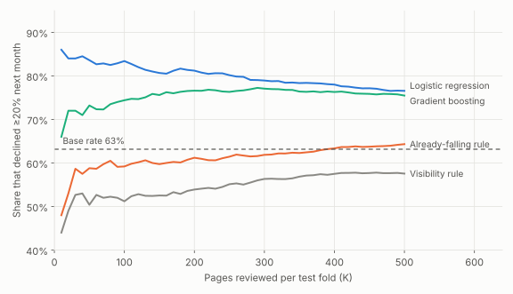
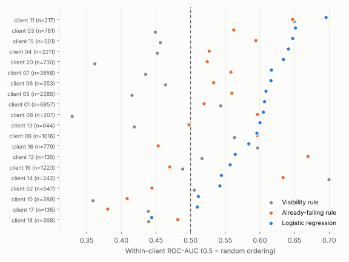
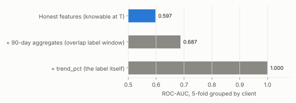
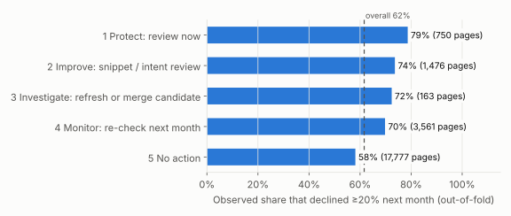

FlyRank ML Internship · Capstone research paper · Freestyle lane: decline-risk prediction
Which pages are about to lose search visibility? A leakage-safe decline-risk ranking
Abstract
Content teams can only review a handful of pages per client each month, so the question is which pages to look at before they lose search visibility. Using 23,727 anonymized pages from 31 client sites in the FlyRank ML Internship dataset, I split each page's 90-day history into three 30-day windows and learned only from days 31–90 to rank the risk of a ≥20% impressions drop in the most recent 30 days. A logistic-regression ranking, validated with 5-fold cross-validation grouped by client so every page is scored by a model that never saw its site, reached ROC-AUC 0.60 against 0.53 for an "already falling" rule and 0.51 for a "highest visibility" rule, and its top-50 review list per test fold caught a decline 84% of the time against a 63% base rate; it also out-ranked the falling-traffic rule inside 16 of the 20 larger clients. The output is a reason-coded, per-client review playbook — decision support for prioritising human review, not a forecast of any single page and not a model of Google's ranking system.
1Introduction: the decision this supports
Picture an editor responsible for a client site with 700 published articles. This month they have time to review twenty. Two rules of thumb are common: start with the pages that get the most impressions ("protect what matters"), or start with the pages whose traffic is already dropping ("follow the trend"). Both are cheap and transparent. The question in this paper is whether a model that combines several simple signals can produce a better review order — measured by how many of the first pages reviewed actually go on to lose visibility.
The cost structure is asymmetric but mild: a false alarm costs one unnecessary review; a miss means a page that was about to lose a fifth of its impressions is noticed a month late. That makes this a ranking problem judged by precision at the top of the list, not a yes/no classifier.
The work also corrects my own earlier iteration. In weeks 5–7 of the internship I trained on a snapshot label using 90-day features — but those 90 days include the very month the label measures. The capstone rebuilds the task so that nothing the model sees comes from the outcome window.
2Data
Source. The FlyRank ML Internship dataset: the anonymized starter release of 30,000 content pages across 32 pseudonymized client sites, with trailing 90-day Google Search Console and GA4 metrics, content metadata and keyword context. Client and page identifiers are pseudonyms; no names, domains, URLs or search queries are used or shown anywhere in this work. (The full warehouse release — 79M daily rows — was used earlier in the internship to write and verify the data contract; the capstone model runs on the starter release because it already carries the non-overlapping windows the design needs.)
Three windows inside one snapshot. Each page has 90-day totals plus "last 30 days" and "previous 30 days" columns. Subtracting the two from the 90-day total recovers the oldest 30 days (it is never negative — checked on every row). That gives a clean prediction moment T, 30 days before export:
Everything the model sees comes from the blue windows; the orange window is used only to define the outcome.
What was excluded, and why.
- 6,273 low-volume pages with fewer than 10 impressions in W2 — a ±20% move on single-digit counts is noise, and pages with zero W2 impressions cannot "decline". 23,727 pages from 31 clients remain.
- Every 90-day aggregate (total impressions/clicks/sessions, CTR, average position, engagement rate, days-with-impressions, and the tiers built on them) — they contain the label window.
- Days since last update — 68% of pages were last updated inside the label window, so its value at T is unknown.
trend_directionandtrend_pct— they are the label.- Generation provider / model fields — marked "not a model feature" in the data dictionary.
- Client and page IDs — used only to group the validation split, never as inputs.
3Methodology
Label
A page is labelled declined when its impressions in W1 are more than 20% below W2 — the dataset pipeline's own "down" rule, which my reconstruction reproduces on all 30,000 rows. Among eligible pages the base rate is 61.6%: most of the portfolio lost visibility that month, which is exactly why every precision number below is shown next to its base rate.
Features (19, all knowable at T)
- Volume: log impressions, clicks and sessions in W2 and in W3.
- Momentum: the W3 → W2 log-change for each of the three.
- Click capture: CTR in W2.
- Page context: content age at T, word count, content type, main search intent.
- Keyword context: search volume, competition, CPC — plus
has_keyword_dataandhas_word_countflags, because missingness follows content type and a blind zero-fill would smuggle the type in silently.
Baselines
- Visibility rule: rank by W2 impressions — the week-4 baseline, made leakage-safe.
- Already-falling rule: rank by the size of the W3 → W2 drop — the rule I proposed in week 2.
Models
Logistic regression (primary: interpretable, continuous with week 5) and histogram gradient boosting as a non-linear check. Both configurations were fixed before evaluation; random seed 42 throughout.
Validation design
Five-fold cross-validation grouped by client: all pages of a client sit in the same fold, so every page receives an out-of-fold score from a model trained only on other clients (zero client overlap is asserted in code). Metrics per test fold: ROC-AUC, average precision, Precision@50 and @200. Because an editor works one site at a time, the operational view re-ranks pages within each of the 20 clients with at least 100 eligible pages and reports within-client AUC and Precision@20.
Leakage checks
(a) The feature list is asserted against a forbidden-column list (label fields, 90-day aggregates, update recency, IDs). (b) Deliberate-leak experiments put the forbidden columns back to show how far the score would be inflated (Figure 3).
4Results
| Method (same folds, same pages) | ROC-AUC | Avg precision | Precision@50 | Precision@200 |
|---|---|---|---|---|
| Base rate (no ranking) | 0.500 | 0.632 | 0.632 | 0.632 |
| Visibility rule | 0.505 | 0.624 | 0.504 | 0.539 |
| Already-falling rule | 0.533 | 0.647 | 0.588 | 0.612 |
| Gradient boosting | 0.586 | 0.698 | 0.732 | 0.766 |
| Logistic regression | 0.597 | 0.712 | 0.836 | 0.812 |
Table 1. Mean over five client-grouped test folds (AUC fold-to-fold s.d.: model 0.019, falling rule 0.023, visibility rule 0.055). Precision@K is the share of the top-K pages in each test fold that declined.


Leakage: the score you would have reported

trend_pct gives 1.00. Neither number would survive deployment.The same correction applies to my own earlier work: the week-5 feature set (snapshot metadata including update recency) scores AUC 0.55 and Precision@50 0.76 on this forward label, below the capstone model's 0.60 and 0.84.
Robustness
- Single 80/20 client split (week-5 design, seed 42; 7 held-out clients, 4,252 pages, base rate 61%): AUC 0.63, Precision@50 0.92 vs 0.54 for the falling rule.
- Stricter volume floor (≥ 100 W2 impressions, 18,010 pages): out-of-fold AUC 0.63 vs 0.57 for the falling rule.
- Non-linear model did not help: gradient boosting is slightly below logistic regression on every metric, so the simpler model is kept.
What the ranking leans on
Standardized logistic-regression coefficients (associations in this window, not causes):
- Younger pages are more likely to decline (age at T has the largest numeric weight, negative). Pages under six months old declined 72% of the time versus 54% for older ones — consistent with an early visibility bump fading.
- Pages that already earn clicks are steadier: higher W2 and W3 clicks lower the risk, while higher impressions at the same click level raise it — visibility without click capture looks fragile.
- Content type and intent matter: feed-sourced articles and pages with no recorded search intent carry higher risk; comparison articles lower. The "unknown intent" signal may partly stand in for site-level differences, which is one reason the evaluation is grouped by client.
- Momentum is a weak signal on its own: pages already falling declined 65% of the time vs 58% for the rest, and recent spikes did not reliably fall back. This is why the falling-traffic rule is barely better than chance.
5Limitations & honest framing
What this work supports
- Observed: in this release, the ranking ordered next-month declines better than two common rules on clients it had never seen.
- Directional: young pages and pages with visibility but few clicks were more decline-prone in this window.
- Decision-support: a per-client review order for humans.
What it does not claim
- That any page will decline, or that scores are calibrated probabilities.
- That editing a page causes recovery — there is no experiment here.
- Anything about how Google's ranking system works.
- One forward month. The label is a pseudo-forward split of a single export, so every page shares the same 30-day outcome window. Whatever affected all sites that month (seasonality, a search update) sits in the 62% base rate and cannot be separated out. A rolling, multi-month backtest on the daily warehouse table — with the final month sealed — is needed before calling this a forecast.
- Modest discrimination. AUC 0.60 is clearly better than chance and than both rules, but it is not a sharp classifier. Its value is in reordering a review queue, not in judging single pages.
- Unbalanced panel. One client holds 29% of eligible pages, and among the 20 larger clients the decline base rate ranges from 18% to 96%. Grouped folds and within-client results keep this visible; results for small clients are noisy, and four clients do not benefit.
- Metadata assumed stable between T and export (type, intent, keyword fields, word count). This cannot be verified from the snapshot.
- Threshold by convention. The 20% decline cut-off is the pipeline's definition, not a cost-validated business threshold.
6Ranked recommendations: the action playbook
Every eligible page receives its out-of-fold risk score and is ranked within its own client. The action depends on risk and stakes; each page also carries plain-language reason codes. The last column is the evidence: the observed share of pages in that bucket that went on to decline.
| Priority / action | Who lands here | What a person does | Pages | Declined |
|---|---|---|---|---|
| 1 · Protect — review now | Top 10% risk in its client, ≥ 1,000 impressions in W2 | Check current rankings and intent match; refresh facts and examples; secure internal links. Highest stakes first. | 750 | 79% |
| 2 · Improve — snippet / intent review | Top 10% risk, zero clicks in W2 | Visibility without clicks: review title, meta description and whether the page answers the query it shows for. | 1,476 | 74% |
| 3 · Investigate — refresh or merge | Top 10% risk, lower visibility, some clicks | Look for overlap with stronger pages on the same topic; decide refresh, merge or leave. | 163 | 72% |
| 4 · Monitor | Top 10–25% risk in its client | No change yet; re-score next month and escalate if it climbs. | 3,561 | 70% |
| 5 · No action | Everything else | — | 17,777 | 58% |
Table 2. Observed decline rate per bucket, out-of-fold (overall 62%). The ladder falls monotonically from 79% to 58%. Bucket thresholds were set once by hand, not tuned.

Reason codes
| Code | Meaning | Declined with | without |
|---|---|---|---|
young_page | Under ~6 months old at T | 72% | 54% |
already_falling | W2 impressions > 20% below W3 | 65% | 58% |
no_clicks_w2 | Impressions but no clicks in W2 | 65% | 58% |
thin_metadata | No keyword data or unknown intent | 66% | 62% |
high_visibility | ≥ 3,000 W2 impressions — raises the stakes, not the risk | 56% | 63% |
recent_spike | W2 impressions > 25% above W3 — context only | 60% | 62% |
How to use it tomorrow
- Open the queue for one client and work down Protect, then Improve, then Investigate — about the top 10% of that site.
- Before acting, verify current performance in Search Console: the score is a month old by design.
- Never automate publishing, rewriting, deleting or redirecting from this score. A human decides every action.
- Monitor monthly: Precision@20 per client, the decline base rate, feature drift and the reason-code mix. Retrain or retire if precision falls to the base rate for two consecutive months.
7Reproducibility
- Notebook (single source of every number and figure):
work/notebooks/capstone.ipynb— runs top to bottom in under a minute on the starter CSV shipped in the repo. - Metrics receipt:
work/outputs/capstone_metrics.json. - Earlier steps: research question, task framing, data contract (warehouse), baseline, week-5 model, validation audit and playbook notebooks in
work/notebooks/; written report inwork/capstone_report.md. - Settings: seed 42;
GroupKFold(n_splits=5)by client; scikit-learn ≥ 1.4, pandas ≥ 2.2 (seerequirements.txt). Re-run:pip install -r requirements.txt, then run the notebook fromwork/notebooks/.
8Acknowledgments & data credit
Built on the FlyRank ML Internship dataset. Thanks to the FlyRank team for releasing real, anonymized search and analytics data for this internship and for the methodology guidance — on leakage, grouped validation and careful claims — that shaped this work. All client and page identifiers are pseudonyms; no client names, domains, URLs, queries or raw exports appear in this paper or its repository.